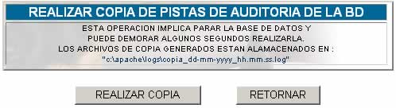

INCIDENTES
Esta opción despliega
la siguiente pantalla:

Las pistas de auditoría genera una
copia de los registros de la base de datos.
El archivo generado se guarda en la ruta C:\apache\logs\copia_dd-mm-yyyy_hh.mm.ss.log,
donde:
dd; corresponde al día
en el cual se realiza la copia.
mm; corresponde al mes.
yyyy; corresponde al año,
mostrado cuatro dígitos.
hh; la hora en el cual se
realiza la copia.
mm; corresponde a los minutos.
ss; corresponde a los segundos.